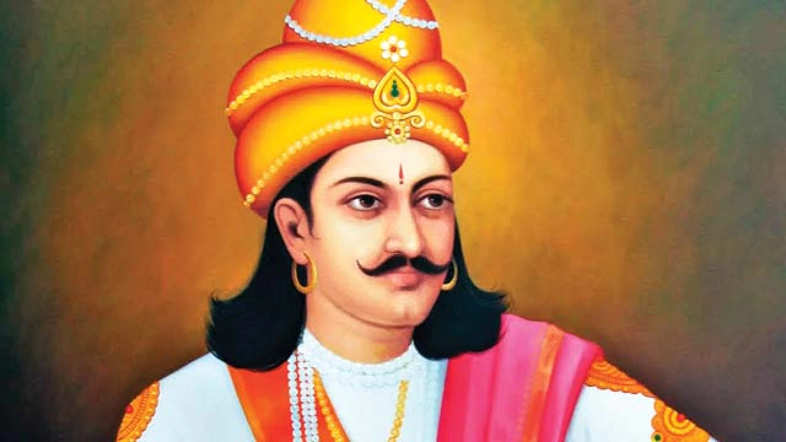

HISTORY OF GOA
Rock art engravings found in Goa are the earliest known traces of human life in India. Goa, situated within the Shimoga-Goa Greenstone Belt in the Western Ghats In Kajur, the rock engravings of animals, tectiforms and other designs in granite have been associated with what is considered to be a megalithic stone circle with a round granite stone in the centre. Petroglyphs, cones, stone-axe, and choppers dating to 10,000 years ago have been found in various locations in Goa, including Kazur, Mauxim, and the Mandovi-Zuari basin. Evidence of Palaeolithic life is visible at Dabolim, Adkon, Shigao, Fatorpa, Arli, Maulinguinim, Diwar, Sanguem, Pilerne, and Aquem-Margaon. Difficulty in carbon dating the laterite rock compounds poses a problem for determining the exact time period. Early Goan society underwent radical change when Indo-Aryan and Dravidian migrants amalgamated with the aboriginal locals, forming the base of early Goan culture.

In the 3rd century BC, Goa was part of the Maurya Empire, ruled by the Buddhist emperor, Ashoka of Magadha. Buddhist monks laid the foundation of Buddhism in Goa. Between the 2nd century BC and the 6th century AD, Goa was ruled by the Bhojas of Goa. Chutus of Karwar also ruled some parts as feudatories of the Satavahanas of Kolhapur (2nd century BC to the 2nd century AD), Western Kshatrapas (around 150 AD), the Abhiras of Western Maharashtra, Bhojas of the Yadav clans of Gujarat, and the Konkan Mauryas as feudatories of the Kalachuris. The rule later passed to the Chalukyas of Badami, who controlled it between 578 and 753, and later the Rashtrakutas of Malkhed from 753 to 963. From 765 to 1015, the Southern Silharas of Konkan ruled Goa as the feudatories of the Chalukyas and the Rashtrakutas. Over the next few centuries, Goa was successively ruled by the Kadambas as the feudatories of the Chalukyas of Kalyani. They patronised Jainism in Goa. In 1312, Goa came under the governance of the Delhi Sultanate. The kingdom's grip on the region was weak, and by 1370 it was forced to surrender it to Harihara I of the Vijayanagara empire. The Vijayanagara monarchs held on to the territory until 1469, when it was appropriated by the Bahmani sultans of Gulbarga. After that dynasty crumbled, the area fell into the hands of the Adil Shahis of Bijapur, who established as their auxiliary capital the city known under the Portuguese as Velha Goa (or Old Goa)

In 1510, the Portuguese defeated the ruling Bijapur sultan Yusuf Adil Shah with the help of a local ally, Timoji, a privateer. They set up a permanent settlement in Velha Goa. This was the beginning of Portuguese colonial rule in Goa that would last for four and a half centuries, until its annexation to India in 1961. The Goa Inquisition, a formal tribunal, was established in 1560, and was finally abolished in 1812. in the later decades of the eighteenth century, the territory of Goa was composed of two parts : the central nucleus of the Old Conquests - Bardez, Ilhas of Tiswadi, and Salsete, these territories had been under Portuguese administration since the sixteenth century; and the New Conquests - Bicholim, Canacona, Pernem, Quepem, Sattari, Sanguem - territories which had been successively added through the eighteenth century. In 1843, the Portuguese moved the capital to the Cidade da Nova Goa, today known as Panaji, from Velha Goa (old Goa ). By the mid-18th century, Portuguese Goa had expanded to most of the present-day state limits. Simultaneously, the Portuguese lost other possessions in India until their borders stabilized and formed the State of Portuguese India.

After India gained independence from British rule in 1947, India requested that Portuguese territories on the Indian subcontinent to be handovered to India. Portugal refused to negotiate on the sovereignty of its Indian enclaves. On 19 December 1961, the Indian Army invaded with Operation "Vijay" resulting in the annexation of Goa, and of Daman and Diu islands into the Indian union. Goa, along with Daman and Diu, was organised as a centrally administered union territory of India. On 16 January, 1967 a poll was held in Goa, to decide the future of the Union Territory of Goa, Daman and Diu. It was the only poll to have been held in independent India. it offered the people of Goa a choice between continuing as a union territory or merging with the state of Maharashtra and the majority chose the former. On 30 May 1987, the union territory was split, and Goa was made India's twenty-fifth state, with Daman and Diu remaining a union territory.